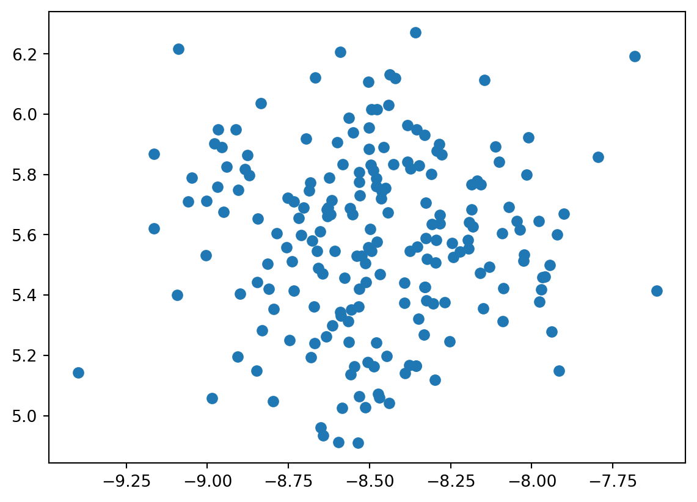
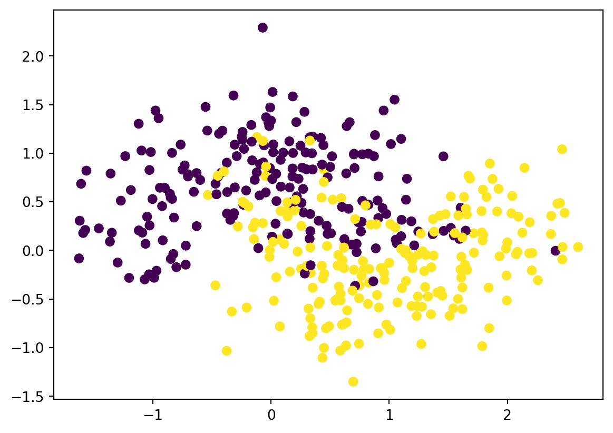
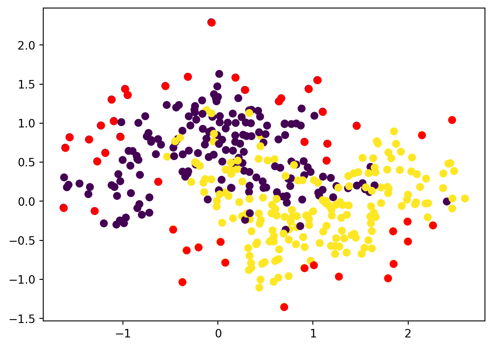
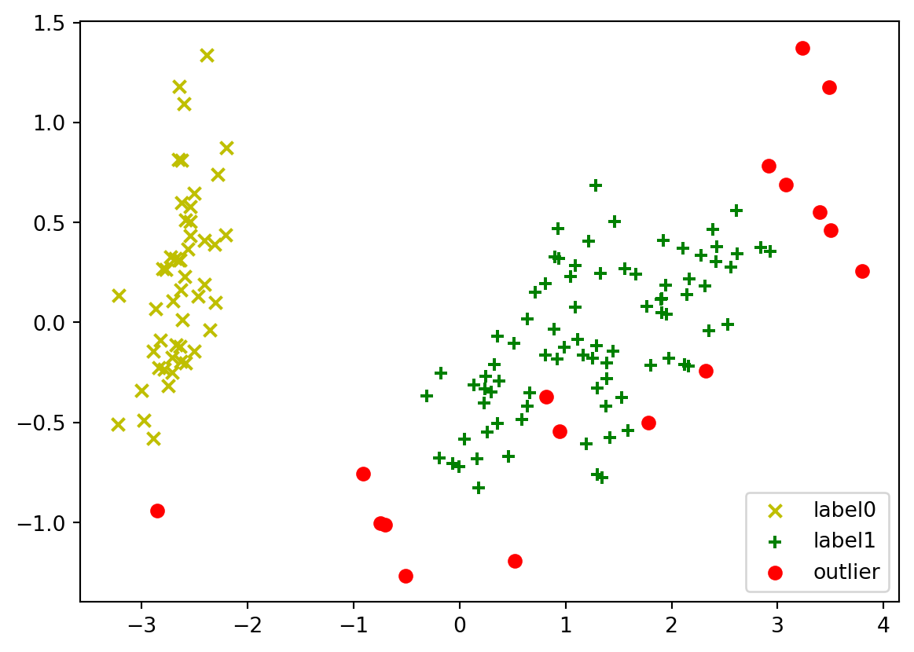

Anomaly detection is a crucial task in data analysis, aimed at identifying rare items, events, or observations that differ significantly from the majority of the data. DBSCAN (Density-Based Spatial Clustering of Applications with Noise) is a powerful clustering algorithm known for its ability to identify clusters of any shape within a dataset. Leveraging its ability to capture the local density of data points, DBSCAN can be a useful tool for anomaly detection. In this blog, we will explore the concept of anomaly detection using the DBSCAN algorithm, including an in-depth explanation, its application in detecting outliers, and a step-by-step implementation in Python.
DBScan
DBSCAN employs a density-based approach to identify clusters by separating high-density areas from low-density areas. It categorizes data points as core points, border points, or noise points, allowing for the detection of outliers that do not belong to any cluster. We will walk through the entire process, from understanding the DBSCAN algorithm’s concepts to applying it to a real-world dataset for anomaly detection. With Python code examples, we will demonstrate how to implement DBSCAN for anomaly detection, assess its performance, and visualize the results using various plotting techniques. By the end of this blog, you will have a comprehensive understanding of the application of DBSCAN in anomaly detection and its practical implementation using real data.
Python implimentation
Figure 1 shows the clusters for anomaly detection. Figure 1 (a) shows the dummy data and Figure 1 (b) shows the dummy data in clusters after dbscan but does not have any anomalies. Figure 1 (c) shows anomalies in the dummy data with some noise using dbscan. Figure 1 (d) shows anomalies in the Iris dataset using dbscan.
Code
# importing libraries
from sklearn.cluster import DBSCAN
from sklearn.datasets import make_blobs, make_moons, load_iris
from numpy import random, where
from matplotlib import pyplot as plt
from sklearn.decomposition import PCA
# setting random seed for getting the same results
random.seed(7)
# making clusters with standard diviation of 0.3
x,y=make_blobs(n_samples=200,centers=1,cluster_std=0.3)
# plotting the data points
plt.scatter(x[:,0],x[:,1])
plt.show()
# creating the dbscan model with minmum samples near the centroid as 20 and cluster radius as 0.28
# # decreasing min samples will decrease outliers and decreasing eps will increase outliers
model=DBSCAN(eps=0.28,min_samples=20)
# predicting the cluster lables
pred=model.fit_predict(x)
# getting the index of outliers and printing them
outlier_index = where(pred==-1)
# getting the value of outliers
outlier_value=x[outlier_index]
# creating a dataset with noise so that there can be outliers
# the clusters are well defined if the noise is lower and outliers are also low
x,y=make_moons(n_samples=400,noise=0.4,random_state=1)
# plotting the dataset
plt.scatter(x[:,0],x[:,1],c=y)
plt.show()
# creating the dbscan model with minmum samples near the centroid as 5 and cluster radiusas 0.2
model=DBSCAN(eps=0.2,min_samples=5)
# assigning clusters
pred=model.fit_predict(x)
# get index of outliers and print them
outlier_index=where(pred==-1)
# get value of outliers and print them
outlier_value=x[outlier_index]
# plot scatter plot of the dataset
plt.scatter(x[:,0],x[:,1],c=y)
# plotting outliers in red
plt.scatter(outlier_value[:,0],outlier_value[:,1],color='r')
plt.show()
data = load_iris()
# creating the dbscan model with minmum samples near the centroid as 5 and cluster radiusas 0.5
model=DBSCAN(eps=0.5,min_samples=5)
# fitting the data
model.fit(data.data)
pca=PCA(n_components=2).fit(data.data)
pca_scatter=pca.transform(data.data)
# storing the shape of the pca
sh=pca_scatter.shape
# plotting data and outliers
for i in range(0,sh[0]):
if model.labels_[i]==0:
cluster1=plt.scatter(pca_scatter[i,0],pca_scatter[i,1],c='y',marker='x')
elif model.labels_[i]==1:
cluster2=plt.scatter(pca_scatter[i,0],pca_scatter[i,1],c='g',marker='+')
else:
cluster3=plt.scatter(pca_scatter[i,0],pca_scatter[i,1],c='r',marker='o')
plt.legend([cluster1,cluster2,cluster3],['label0','label1','outlier'])
plt.show()



Conclusion
In conclusion, DBSCAN emerges as a valuable tool for anomaly detection, enabling the identification of outliers and rare occurrences within datasets. Its ability to delineate clusters based on local density offers a robust mechanism for isolating data points that deviate significantly from the general patterns. By leveraging the density-based approach and the concept of core points, border points, and noise points, DBSCAN facilitates the detection of anomalies without the need for predefined cluster shapes. Through this blog, we have explored the intricacies of the DBSCAN algorithm, its application in outlier detection, and its implementation using Python. By delving into practical examples and visualization techniques, we have demonstrated the efficacy of DBSCAN in identifying anomalies, providing readers with a comprehensive understanding of its utility and application in real-world scenarios.